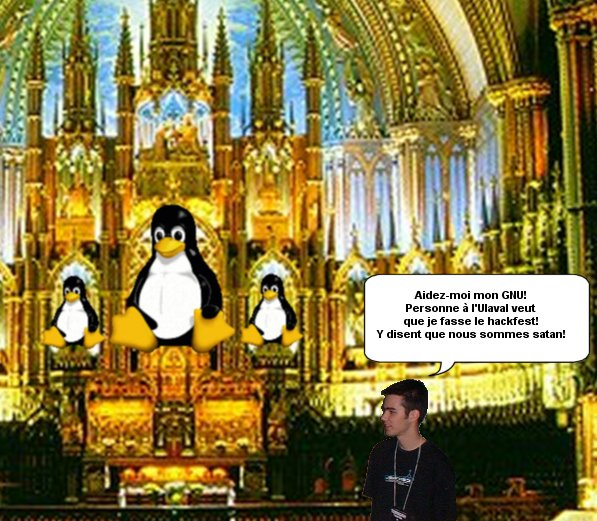
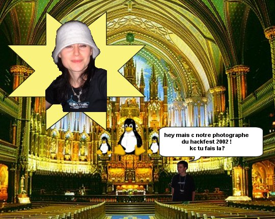
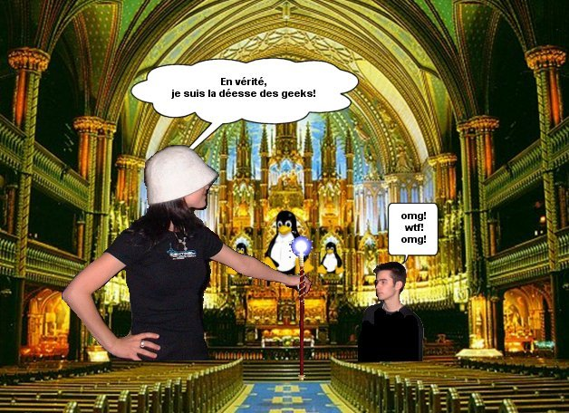
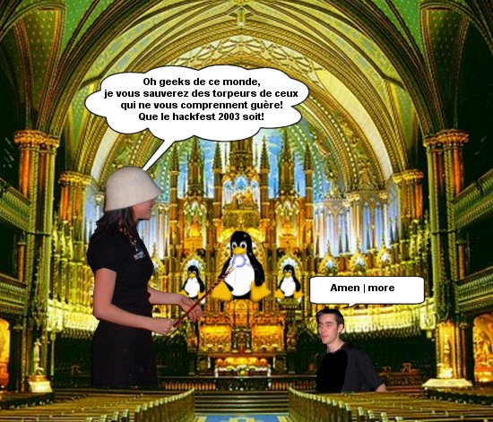

Avec toute ces pressions de la part des médias,
il est normal que l'acceptation du hackfest à l'ulaval relève du miracle...
Voici comment ça c'est vraiment passé!

C'est alors que dans un buzz phénoménal que quelque chose apparu dans le temple GNU...


Coup de théatre! Elle n'était pas qu'une simple photographe!

Et elle disparue tel un free(déesse)
Et c'est ainsi que les prières de FinalStrm furent exaussées...
Vous en voulez plus? En avant vers la part 5!